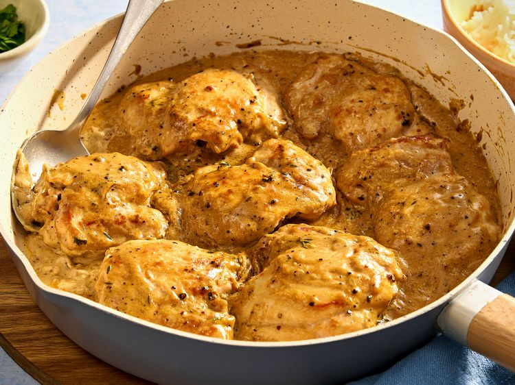
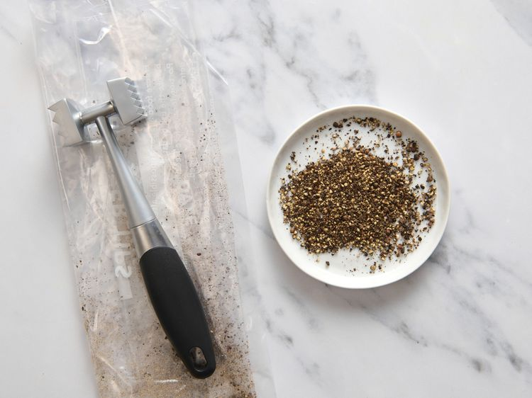
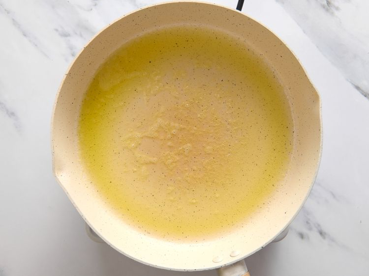
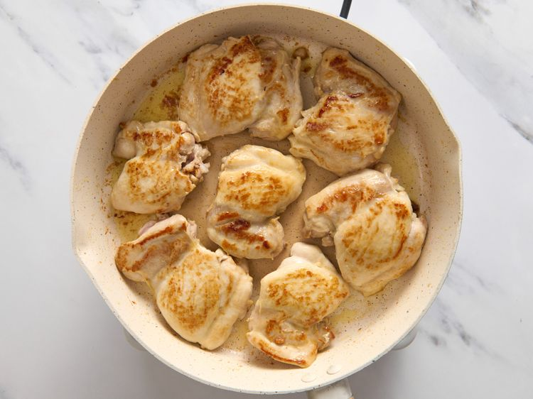
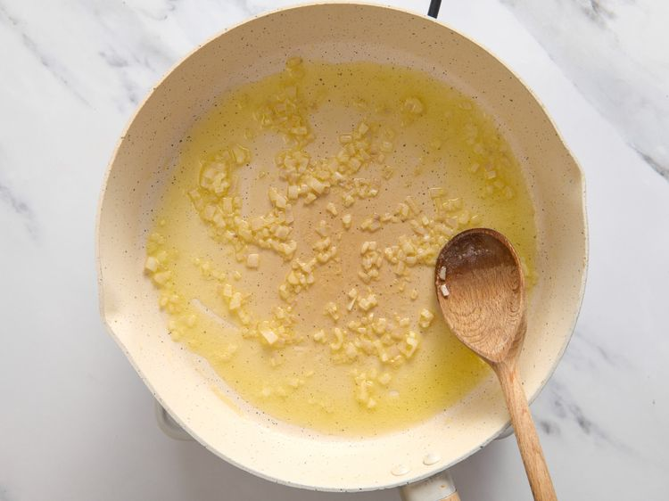
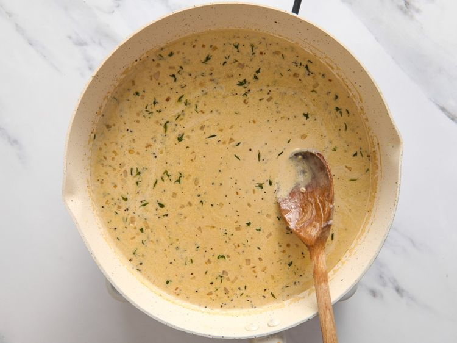
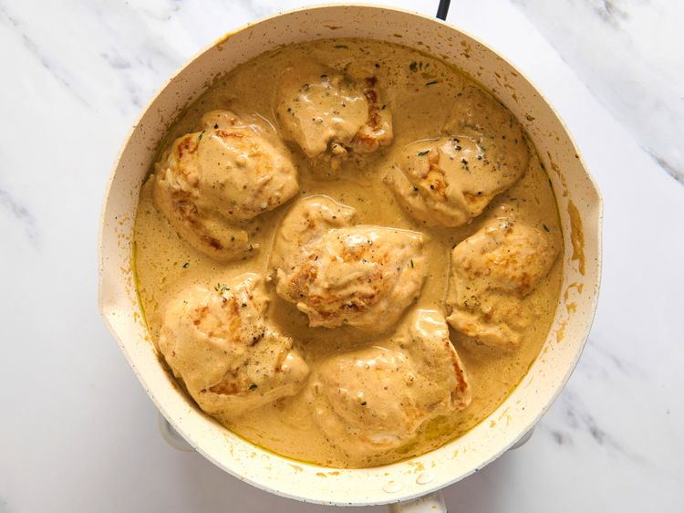
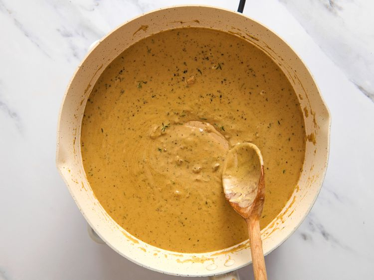
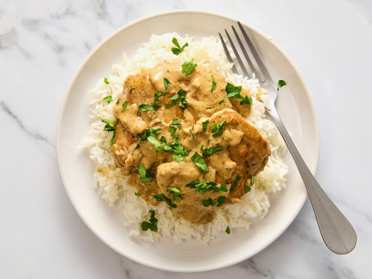

Home
Chicken au Poivre

Ingredients
- 1 tablespoon black peppercorns
- 1 tablespoon olive oil
- 3 tablespoons unsalted butter, divided
- 2 pounds skinless, boneless chicken thighs, patted dry
- 1/2 teaspoon salt, or to taste
- 2 tablespoons minced shallot
- 1 cup low-sodium chicken broth
- 1/2 cup heavy cream
- 3 fresh thyme sprigs, or to taste
- 1 tablespoon freshly squeezed lemon juice
- fresh parsley sprigs for garnish (optional)
Steps
- Add peppercorns to a zippered food storage bag and seal. Lightly pound with a meat mallet or skillet until peppercorns are broken and cracked. Set aside.

- Add olive oil and 1 tablespoon butter to a 12-inch nonstick skillet set over medium heat. Heat until the butter is melted and no longer bubbling. Swirl the pan to combine oil and butter.

- Season the chicken with salt and add to the skillet. Cook chicken on both sides until lightly browned, about 3 to 4 minutes per side. Remove to a plate and keep warm.

- Add remaining butter and shallot to the skillet. Cook, stirring, until butter melts and shallot is softened, about 1 minute.

- Stir in broth, heavy cream, thyme, and cracked peppercorns. Cook, stirring, and bring to a boil. Make sure to stir up any browned bits that are left into the sauce from the bottom of the pan.

- Add chicken and any juices from the plate. Return to a boil, then reduce to a simmer. Cook until chicken is no longer pink at the center and juices run clear, 8 to 10 minutes. An instant read thermometer inserted into the thickest part should read 165 degrees F (74 degrees C).

- Divide chicken among 4 plates over rice. Turn the heat back to medium, add lemon juice, and cook until sauce thickens and darkens a bit, 3 to 5 minutes.

- Spoon sauce over chicken and garnish with parsley. Enjoy!
